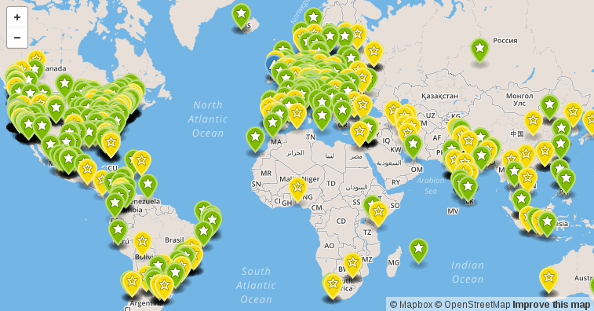
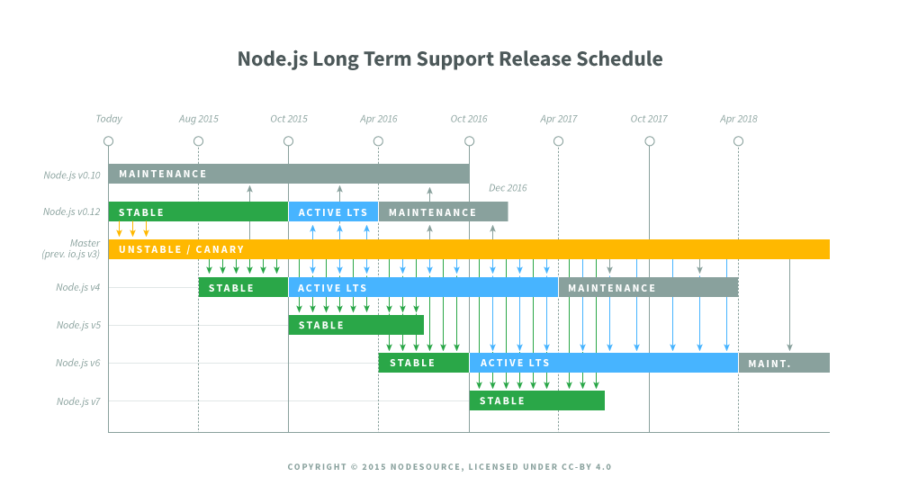

class: center, middle # Node.js *Manuel Pineda* [@pin3da_](https://twitter.com/pin3da_) [pin3da at github](https://github.com/pin3da) --- # Why NodeJS ? How long it takes ? -- ## I/O lattency Memory | Clock cycles ------ | ------------- L1 | 1 cycles L2 | 3 cycles RAM | 250 cycles Disk | 41.000.000 Network| 240.000.000 --- # Why NodeJS ? Synchronous models does not scale with threads: They spend a lot of time waiting for answers. --- # Why NodeJS ? ### Scale with event loop: What if we can do "other things" while we wait. -- ## How does NodeJS work ? <img src="./images/event_loop.jpg" width="65%"> --- # Why NodeJS ? Node is built on Chrome's V8 JavaScript engine. Node.js uses an event-driven, non-blocking I/O model that makes it lightweight and efficient. <img src="./images/node_v8.png" width="80%"> --- # Why NodeJS ? ### People: One of the bigest open source communities.  --- # Why NodeJS ? ### People: One of the bigest open source communities. - 1199 Meetups. - 146 NodeSchools. - 13 Conferences. JS people in Pereira. - http://pereirajs.org/ - http://nodeschool.io/pereira/ --- # Why NodeJS ? ### Foundation "Host an open *governance model* that encourages participation, use, technical contribution, and a framework for *long term stewardship* by an ecosystem invested in the success of Node.js" - io.js fork and then merge. - LTS --- # Why NodeJS ?  --- # Why NodeJS ? ### NPM: Node package manager. .red[*] -- - 214,266 total packages - 136,831,517 downloads in the last day - 743,622,017 downloads in the last week - 3,058,781,896 downloads in the last month .footnote[.red.bold[*] Taken from https://www.npmjs.com/ december of 2015] --- # NodeJS doc. ### NodeJS Core (Some modules) -- - Buffer - C/C++ Addons - Cluster - Crypto - Events - File System - HTTP - Stream NodeJS is designed to build scalable network applications. --- # Little example ## HTTP server ```javascript const http = require('http'); const hostname = '127.0.0.1'; const port = 1337; http.createServer((req, res) => { res.writeHead(200, { 'Content-Type': 'text/plain' }); res.end('Hello World\n'); }).listen(port, hostname, () => { console.log(`Server running at http://${hostname}:${port}/`); }); ``` --- # Another example ## Export your modules ```javascript module.exports = function(line) { return line.toUpperCase(); } ``` ## Require modules ```javascript var cap = require('./my_module'); console.log(cap('Node js is so cool !')); // 'NODE JS IS SO COOL !' ``` --- # Another example ## Import modules from npm ```sh npm install gamma ``` Optionally, you can add the --save flag if you already have a package.json ```javascript var gamma = require('gamma') gamma(5) // 23.999999999999996 ``` --- # Cool stuff around NodeJS - Express JS - WebSockets - Bindings from all languages and libraries (as ZMQ) - WebTorrent - Browserify --- # Another example. ## Let's make a chat (?) --- # Homework ### Install NodeJS (and npm) ### Do the workshops ```sh npm install -g learnyounode npm install -g stream-adventure ``` --- class: center, middle # Thanks